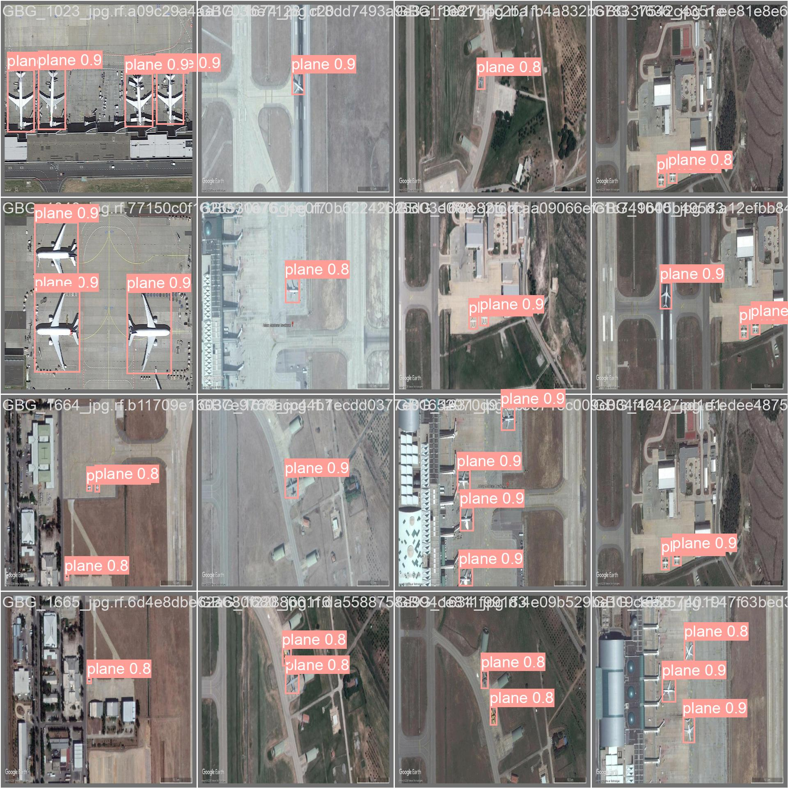
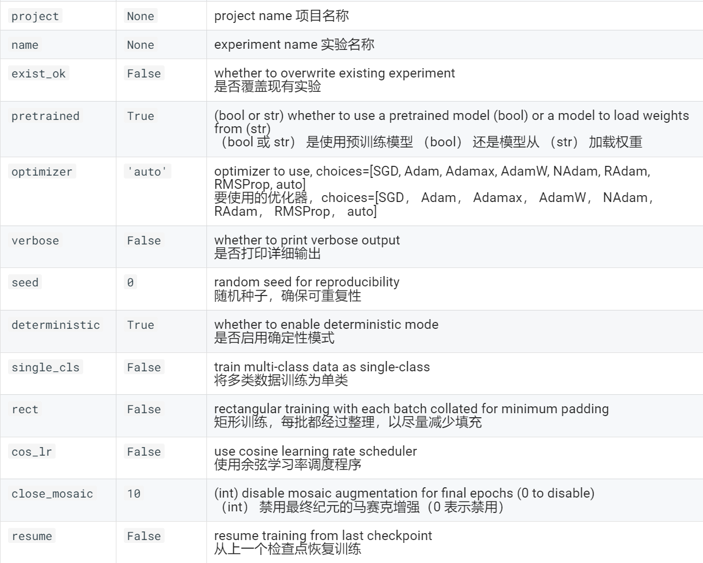

前言
花两三个星期打相关比赛，虽然拿了奖，但经历了一段被挂哥们打得抬不起头的时光，不得不说，比赛水太深了。下面介绍YOLOv8。
YOLOv8 是 ultralytics 公司在 2023 年 1月 10 号开源的 YOLOv5 的下一个重大更新版本，目前支持图像分类、物体检测和实例分割任务。它建立在以前 YOLO 版本的成功基础上，并引入了新的功能和改进，以进一步提升性能和灵活性。具体创新包括一个新的骨干网络、一个新的 Ancher-Free 检测头和一个新的损失函数，可以在从 CPU 到 GPU 的各种硬件平台上运行。
不过 ultralytics 并没有直接将开源库命名为 YOLOv8，而是直接使用 ultralytics 这个词，原因是 ultralytics 将这个库定位为算法框架，而非某一个特定算法，一个主要特点是可扩展性。其希望这个库不仅仅能够用于 YOLO 系列模型，而是能够支持非 YOLO 模型以及分类分割姿态估计等各类任务。
- 模型结构设计图如下：
图片来源：RangeKing
- 使用效果：

环境配置及准备(GPU)
关于环境配置有诸多方法，下面提供简单的配置方法和介绍
PyTorch-2.1.2 : PyTorch是一个开源的深度学习框架，它提供了灵活的张量计算和动态计算图的功能。由Facebook于2016年发布，PyTorch在深度学习领域取得了广泛的应用和认可。
Cuda-12.1 : 下载后直接安装即可。CUDA（Compute Unified Device Architecture）是由NVIDIA推出的并行计算平台和编程模型。它允许开发人员使用NVIDIA GPU（图形处理单元）进行通用目的的并行计算，而不仅仅是用于图形渲染。
Anaconda or VScode: 下面以Anaconda为例,便于快捷配置python虚拟环境。
安装ultralytics: 安装Anaconda后在所有应用中找到Anaconda的文件夹，打开Anaconda prompt,进入后按以下步骤操作。
1
2
3
4
5
6
7
8
9
10
11
12
13
14
15
16
17
18
19
20
21
conda create -n name # name为环境名，可自定义，路径在: '盘':\Anaconda\envs\name
conda activate name python=3.8.8
conda install ultralytics
方法一：
conda install pytorch torchvision torchaudio pytorch-cuda=12.1 -c pytorch -c nvidia
方法二:
cd ultralytics-main
conda install -r requirements.txt
conda list
准备数据集并配置data文件
寻找数据集
Roboflow : The world’s largest collection of open source computer vision datasets and APIs.(他自己说的)
下载时选择YoloV8格式即可，一般图片存放在images中，labels中是每张图片的标签，格式一般为：图片名.txt
配置数据集
在ultralytics文件下建文件夹datasets用于存放训练数据，在文件夹中创建配置文件data.yaml，我个人比较喜欢的数据存放格式为：
1 | datasets |
建议比例为7：2：1，另外测试集是可省略的。
配置data.yaml文件
1 | train: path/to/datasets/train/images # 训练数据集的路径 |
快速开始
训练
在 COCO128 数据集上训练 YOLOv8n 100 个 epoch，图像大小为 640。可以使用 device 参数指定训练设备。如果未传递任何参数，则将使用 GPU（如果可用），否则 device=cpu 将使用 GPU device=0 。
1 | from ultralytics import YOLO |
YOLO 模型的训练设置是指用于在数据集上训练模型的各种超参数和配置。这些设置可能会影响模型的性能、速度和准确性。一些常见的 YOLO 训练设置包括批量大小、学习率、动量和权重衰减。可能影响训练过程的其他因素包括优化器的选择、损失函数的选择以及训练数据集的大小和组成。仔细调整和试验这些设置以实现给定任务的最佳性能非常重要。

恢复中断的训练
在使用深度学习模型时，从以前保存的状态恢复训练是一项至关重要的功能。这在各种情况下都会派上用场，例如当训练过程意外中断时，或者当您希望继续使用新数据训练模型或训练更多时期时。
恢复训练时，Ultralytics YOLO 会从上次保存的模型中加载权重，并恢复优化器状态、学习率调度器和纪元数。这使您可以从中断的地方无缝地继续训练过程。
通过在调用 train 方法时设置 resume 参数， True 并指定包含部分训练模型权重 .pt 的文件的路径，可以轻松地在 Ultralytics YOLO 中恢复训练。
1 | from ultralytics import YOLO |
通过设置 resume=True ，该 train 函数将使用存储在“path/to/last.pt”文件中的状态从中断的地方继续训练。如果省略参数 resume 或将其 False 设置为 ，则 train 该函数将启动新的训练会话。
请记住，默认情况下，检查点在每个 epoch 结束时保存，或者使用 save_period 参数以固定间隔保存，因此必须至少完成 1 个 epoch 才能恢复训练运行。
验证
在 COCO128 数据集上验证经过训练的 YOLOv8n 模型的准确性。
1 | from ultralytics import YOLO |
预测
Ultralytics YOLO 模型在推理期间传递给模型时 stream=True 返回 Results 对象的 Python 列表或内存高效的 Python Results 对象生成器：
1 | from ultralytics import YOLO |
导出
将 YOLOv8n 模型导出为不同的格式，如 ONNX 或 TensorRT。有关导出参数的完整列表，请参阅下面的“参数”部分。
1 | from ultralytics import YOLO |
参数：
超参数优化
使用 Ray Tune 超参数调优
超参数优化对于通过发现最佳超参数集来实现峰值模型性能至关重要。这涉及使用不同的超参数运行试验并评估每个试验的性能
Ultralytics YOLOv8 结合了 Ray Tune 进行超参数调优，简化了 YOLOv8 模型超参数的优化。借助 Ray Tune，您可以利用高级搜索策略、并行性和提前停止来加快调整过程。
Ray Tune 是一个超参数调优库，旨在提高效率和灵活性。它支持各种搜索策略、并行性和早期停止策略，并与流行的机器学习框架无缝集成，包括 Ultralytics YOLOv8
用CIL进行安装(注意选择好安装位置)
1 | pip install -U ultralytics "ray[tune]" |
用法如下：
1 | from ultralytics import YOLO |
使用 tune() 方法进行超参数调优
下面介绍如何使用该方法利用该 model.tune() Tuner 类在 COCO8 上使用 AdamW 优化器对 YOLOv8n 进行 30 个 epoch 的超参数调优，并跳过绘图、检查点和验证，而不是在最终 epoch 上进行调优，以加快调优速度：
1 | from ultralytics import YOLO |
以下是每个参数的详细说明：
运行之后会得到各个参数的散点图：
在得到的best_hyperparameters.yaml中会保存运行周期内的相应最优超参数。
自定义数据集
安装labelimg
选择安装位置，安装labelimg，GitHub地址
1 | pip install PyQt5 |
至此，环境配置步骤已经全部完成。在第三方库安装完成后，在命令行中输入labelimg指令以启动labelimg（注：环境配置完成后再次启动只需要打开anaconda prompt命令行并输入labelimg即可启动，无需再次安装第三方库）。
使用labelimg
labelimg的标注模式分为VOC和YOLO两种，两种模式下生成的标注文件分别为.xml文件和.txt文件，因此在进行标注前需要优先选择好标注的模式。
使用labelimg以YOLO模式进行标注产生的标注文件如下，classes.txt文件中存放的是类别标签，标签文件中以类别+锚框的位置坐标信息进行保存，文件中有几行则说明对应的标注图像中有几个锚框。最后将图片与标签按datasets的格式准备好即可。
总结
YOLO(You Only Look Once),从v5到v8，见证的不仅仅是技术的升级与迭代，更是一种技术在不断融入和改变生活的趋势。不论是自动驾驶技术还是智能监控与安防，医学影像分析还是工业自动化，YOLO都能发挥巨大的作用。相比AICG，它有更低的门栏和开源的社区，学习成本低。但话说回来，任何深度学习相关的内容都离不开算力的支持，也希望我国能尽早在硬件层面上能取得更大的突破，还每位开发者一片春天。
如果您喜欢此博客或发现它对您有用，则欢迎对此发表评论。 也欢迎您共享此博客，以便更多人可以参与。 如果博客中使用的图像侵犯了您的版权，请与作者联系以将其删除。 谢谢 ！